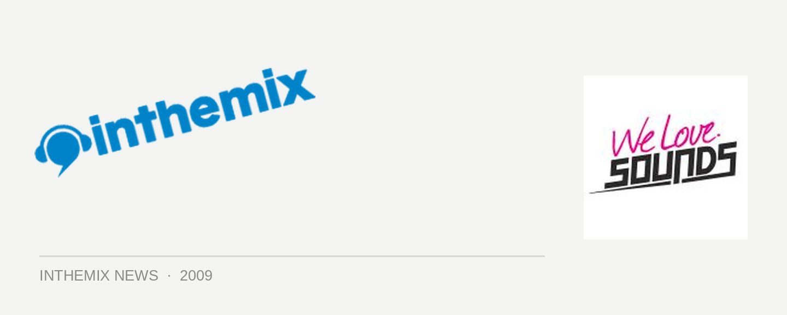

We Love Sounds afterparty mayhem!
There’s plenty to look forward to at the We Love Sounds festival next weekend, but the organisers have given us just as much of a reason to keep kicking on after things wind up over at Fox Studios. There will be two massive ‘official’ events at Soho and The Cross, while the Trashbags crew will also be taking over their biggest venue yet for a party at The Arthouse that will surely prove pretty hectic.
The We Love Sounds ‘official after-party #1’ will be taking over both floors of the Soho complex, with the UK’s Kissy Sell Out playing an exclusive DJ set to compliment his live performance at the festival, and Baltimore crazy Dave Nada also locked in. Over at The Cross the ‘official afterparty #2’ is also something that has all the ingredients of living up to the legendary post-events that we’ve enjoyed in previous years. James Zabiela, Guy Gerber, 16 Bit Lolitas, Popof, Dinky and In Flagranti will all be present to bring the insanity. Wow.
The notorious Trashbags crew on the other hand will be creating mayhem all of their own at The Arthouse with We Love Noize, a party featuring Toxic Avenger, Bobmo and another two secret guests. ITM can make a fairly educated guess at who those guests might be, but you’ll have to wait until the day of the event to find out. It’s safe to say though, if you like your electro noisy and drenched with feedback then it’ll be the place to carry onto after We Love Sounds.
On Saturday 6th June you can catch the We Love Sounds official after-party #1 at Soho, the We Love Sounds official after-party #2 at The Cross while We Love Noize will be at The Arthouse. Prepare for some classic June Long Weekend mayhem!
We Love Sounds after party #1
Soho
Kissy Sell Out (DJ set)
Dave Nada
The Aston Shuffle
Act Yo Age
Ping Pong DJs
LC
Sushi
Bobby Disco
Push Play
We Love Sounds after party #2
The Cross, Bourbon & Bunker
James Zabiela
Guy Gerber (live)
16 Bit Lolitas
Popof (live)
Dinky
In Flagranti (live)
Shazam
Emerson Todd
Declan Lee
Canyons
Ben Korbel
Tony Plowman
Jimmy Posters
Trashbags pres. We Love Noize
The Arthouse
Toxic Avenger
Bobmo
Bag Raiders
Redial
Smacktown
Plus two special guests!